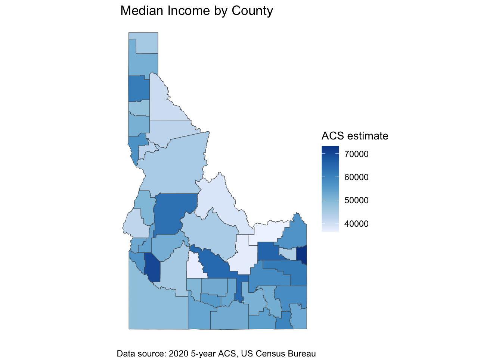

Next, you’ll need to get an API key from the U.S. Census Bureau. Follow this link, enter your information and you should get an email with your API key shortly.
Next, add your api key and run the following code:
census_api_key("YOUR API KEY GOES HERE", install =TRUE)
Get Data
Step 3: Find variables
Next you’ll want to get the variables you’d like to use in your project. There are a TON of variables you can get through tidycensus. So the best way to start is to use the load_variables() function to get a searchable table of all the variables you can use. In this case, we’ll call up the 2020 American Community Survey and store the results in an object called tidycensusvariables. We can then browse and search with the View() function (see video for demonstration of this part).
tidycensusvariables2020 <-load_variables(year =2020, dataset ="acs5/profile") #Run View(tidycensusvariables) in your console
To make searching easier, we’re going to use the separate() function from tidyr.
This code is telling R to take the label variable in tidycensusvariables2020 and separate it into columns based on the seperator “!!”. This is going to make it a lot easier to search using “filter” in View(). Plese see the video for more details about searching for variables.
Step 4: Download Data
Now that I’ve searched through the dataframe and found the variables I want to use, I’ll use get_acs() to pull the actual data into a new dataframe.
Downloading feature geometry from the Census website. To cache shapefiles for use in future sessions, set `options(tigris_use_cache = TRUE)`.
Using the ACS Data Profile
Since tidycensus pulls both the estimated value and the margin of error for each variable, we’ll just keep the estimated value using the code below. Dealing with the margin of error variables is beyond the scope of the course, but you can read more about it here: https://walker-data.com/tidycensus/articles/margins-of-error.html. The codeblock below also removes the “E” at the end of each variable name.
So. With that, you’ve got a nice, tidy dataframe with demographic data ready to analyze.
Bonus: Making maps with tidycensus
Now, what if you would like do a map visualization with your data? Tidycensus has a ton of tools and methods for doing that, which I encourage you to explore. For now, we’ll do a simple one with median income.
Median Income
To make a map visualization of median_income in Idaho, you’ll use ggplot() and the fill aesthetic with geom_sf():
ggplot(data = id_acs, aes(fill = median_income)) +geom_sf() +scale_fill_distiller(direction =1) +labs(title =" Median Income by County",caption ="Data source: 2020 5-year ACS, US Census Bureau",fill ="ACS estimate") +theme_void()

You can replicate similar maps with any of the variables we pulled into id_acs.